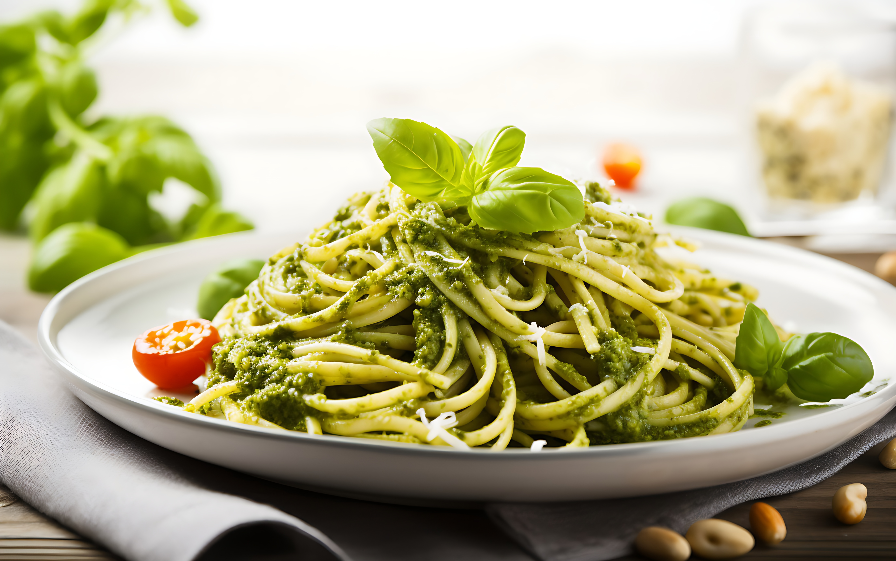

Pasta pesto

Description
Pasta with pesto is a simple yet exquisite dish. The pasta is coated with a
creamy pesto sauce made from basil, garlic, pine nuts, and Parmesan. This blend
of herbaceous and flavorful tastes creates a rich and enjoyable culinary experience.
For a finishing touch, add some Parmesan shavings and a drizzle of olive oil.
Ingredients
- Salt
- Pepper
- Oil
- Spaghetti
- Basil
- Garlic Clove
- Pine Nuts
- Pecorino Cheese
- Parmesan Cheese
Steps
-
Cook the Spaghetti: Bring a large pot of salted water to a boil.
Add the spaghetti and cook according to the package instructions
until al dente. Reserve some pasta water before draining the
spaghetti.
-
Prepare the Pesto Sauce: In a food processor, combine fresh
basil leaves, a peeled garlic clove, pine nuts, grated Pecorino
cheese, and grated Parmesan cheese. Pulse until the ingredients
are finely chopped.
-
Add Olive Oil: While the food processor is running, slowly add
olive oil to the mixture until it reaches a smooth, creamy
consistency.
-
Season the Sauce: Season the pesto sauce with salt and pepper
to taste. You can add a little reserved pasta water if the sauce
is too thick.
-
Combine the Pasta and Sauce: In a large bowl, mix the cooked
spaghetti with the pesto sauce. Toss until the pasta is evenly
coated.
-
Serve: Serve the pasta in bowls, and garnish with extra Parmesan
shavings and a drizzle of olive oil for an extra touch of flavor.